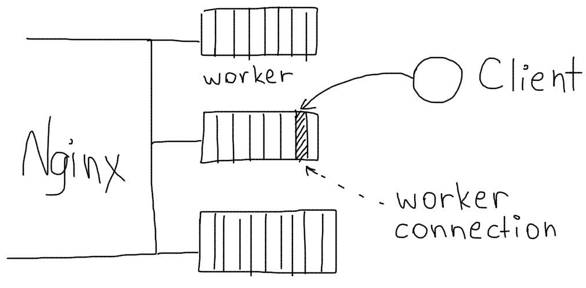
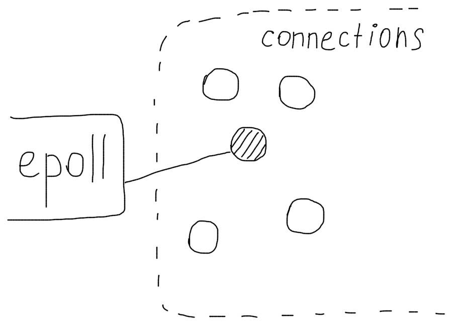

Оптимальная настройка Nginx
В стандартной конфигурации Nginx может работать при очень больших нагрузках. Тем не менее, эффективность его работы можно значительно повысить, настроив его параметры. Такая настройка называется тюнинг (tuning — подстройка, регулировка).
Как настраивать
Обычно конфигурационный файл называется nginx.conf. Его можно найти:
Debian
/etc/nginx/nginx.conf
Freebsd
/usr/local/etc/nginx/nginx.conf
Файл настроек обычно выглядит так:
user www-data;
worker_processes 1;
events {
worker_connections 1024;
}
http {
...
}
Оптимизация параметров
Обработка соединений
Максимальное количество соединений, которые Nginx может обслуживать одновременно определяются произведением двух параметров:
Всего соединений = worker_processes x worker_connections

worker_processes auto;
# Определяет количество рабочих процессов. Его лучше устанавливать в auto в новых версиях.
worker_connections 1024;
# Устанавливает максимальное количество соединений одного рабочего процесса. Следует выбирать значения от 1024 до 4096.
Директива use устанавливает метод выбора соединений. Для разных операционных систем нужно использовать разные методы.
Linux
use epoll
Freebsd
use kqueue

По умолчанию, Nginx постарается выбрать наиболее эффективный метод самостоятельно.
Обработка запросов
multi_accept on;
# Будет принимать максимально возможное количество соединений
sendfile on;
# Метод отправки данных sendfile более эффективен, чем стандартный метод read+write
tcp_nodelay on;
tcp_nopush on;
# Будет отправлять заголовки и и начало файла в одном пакете
Информация о файлах
Nginx умеет кешировать информацию о файлах, с которыми ему приходится работать (например, css стили или картинки). Если к таким файлам происходит много обращений, кеширование может значительно ускорить этот процесс.
open_file_cache max=200000 inactive=20s;
# Определяет максимальное количество файлов, информация о которых будет содержаться в кеше
open_file_cache_valid 30s;
# Определяет через какое время информация будет удалена из кеша
open_file_cache_min_uses 2;
# Будет кешировать информацию о тех файлах, которые были использованы хотя бы 2 раза
open_file_cache_errors on;
# Будет кешировать информацию об отсутствующих файлах
Логирование
Основной лог лучше отключить для экономии дисковых операций, а лог ошибок лучше перевести в режим логирования только критических ситуаций.
access_log off;
error_log /var/log/nginx/error.log crit;
Сжатие Gzip
Обязательно нужно использовать сжатие, это значительно уменьшит трафик. Проверить, включено ли сжатие, можно с помощью Gzip checker.
gzip on;
gzip_disable "msie6";
gzip_types text/plain text/css application/json application/x-javascript text/xml application/xml application/xml+rss text/javascript application/javascript;
# Будет сжимать все файлы с перечисленными типами
Обработка клиентов
Keepalive соединения позволяют избежать необходимости повторного создания соединения между клиентом и сервером.
keepalive_timeout 30;
# Будет ждать 30 секунд перед закрытием keepalive соединения
keepalive_requests 100;
# Максимальное количество keepalive запросов от одного клиента
Много проблем могут создать медленные (тупящие) клиенты. Медленная передача тела запроса от клиента к серверу и неожиданное закрытие клиентом соединений могут создать большое количество лишних соединений на сервере.
reset_timedout_connection on;
# Если клиент перестал читать отвечать, Nginx будет сбрасывать соединение с ним
client_body_timeout 10;
# Будет ждать 10 секунд тело запроса от клиента, после чего сбросит соединение
send_timeout 2;
# Если клиент прекратит чтение ответа, Nginx подождет 2 секунды и сбросит соединение
Ограничивайте отправку больших запросов на сервер (например, загрузку больших файлов), если это не предусмотрено сайтом.
client_max_body_size 1m;
# В этом случае сервер не будет принимать запросы размером более 1Мб
После правки настроек необходимо выполнить перезагрузку:
nginx -s reload
Вся конфигурация
worker_processes auto;
events {
use epoll;
worker_connections 1024;
multi_accept on;
}
http {
include /etc/nginx/mime.types;
default_type application/octet-stream;
access_log off;
error_log /var/log/nginx/error.log crit;
keepalive_timeout 30;
keepalive_requests 100;
client_max_body_size 1m;
client_body_timeout 10;
reset_timedout_connection on;
send_timeout 2;
sendfile on;
tcp_nodelay on;
tcp_nopush on;
gzip on;
gzip_disable "msie6";
gzip_types text/plain text/css application/json application/x-javascript text/xml application/xml application/xml+rss text/javascript application/javascript;
open_file_cache max=200000 inactive=20s;
open_file_cache_valid 30s;
open_file_cache_min_uses 2;
open_file_cache_errors on;
}
Самое важное
Самым большим эффектом на посетителей окажет включение сжатия gzip.